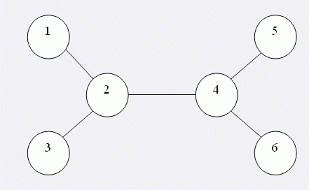

OItown周围有n个小村庄。村庄与村庄之间有公路，每一条公路连接两个村庄。因为这些村庄并不富裕，所以，当初建公路时，这些公路只是恰好将这些村庄连通，也就是说要任意从一个村庄沿着公路走到另一个村庄的方式都是唯一的。于是，有时两个很近的村庄之间要走很长的路。所以，村民们就希望能开通在这些公路上的公共交通路线，方便大家的出行。巴士运营公司采纳了这个意见。同时，巴士公司认为这些巴士线路必须满足下述条件： 1． 每条巴士线路的起点和终点都在村庄内，巴士开行的线路都沿着公路； 2． 每条公路都要有巴士线路覆盖，这样村民们的出行就只需要换成巴士车就行了； 3． 每条公路只被一条巴士线路覆盖，且只被覆盖一次，否则巴士公司觉得在成本上不划算； 4． 巴士线路的总数应当最少，这样才能方便管理。例如，如果6个村庄之间的5条公路是这样的：  那么这样的3条巴士线路就能满足上面的条件：1-2-3，2-4，5-4-6。不过，居民们自然认为“巴士换乘”是不方便的，因此他们希望从在一个村庄乘车去另一个村庄的路上换乘次数的最大值尽可能少。例如上面这个线路安排中，从村庄1到村庄6需要换成2次，是最大的换乘次数。另一方面，巴士公司认为，一条公交线路越长意味着，如果巴士车发生故障，因此而受影响耽误时间的乘客就越多。所以巴士公司希望，最长的一条线路尽可能短。所谓短，就是途经的村庄少。现在，这个巴士线路设计的任务交给了参加SHTSC的你，你当然要同时考虑上面两方面的因素，所以，你必须先计算出：(1)换乘次数的最大值的最小可能值(2)最长的巴士线路途经的村庄数的最小可能值。
| F.A.Qs | Home | Discuss | ProblemSet | Status | Ranklist | Contest | 入门OJ | ModifyUser Xeonacid | Logout | 捐赠本站 |
|---|